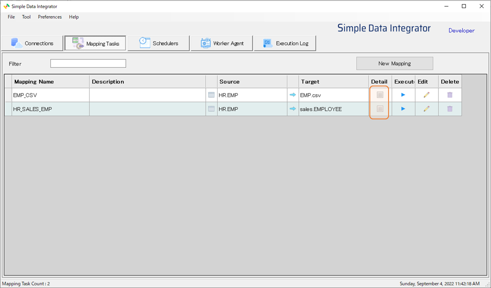
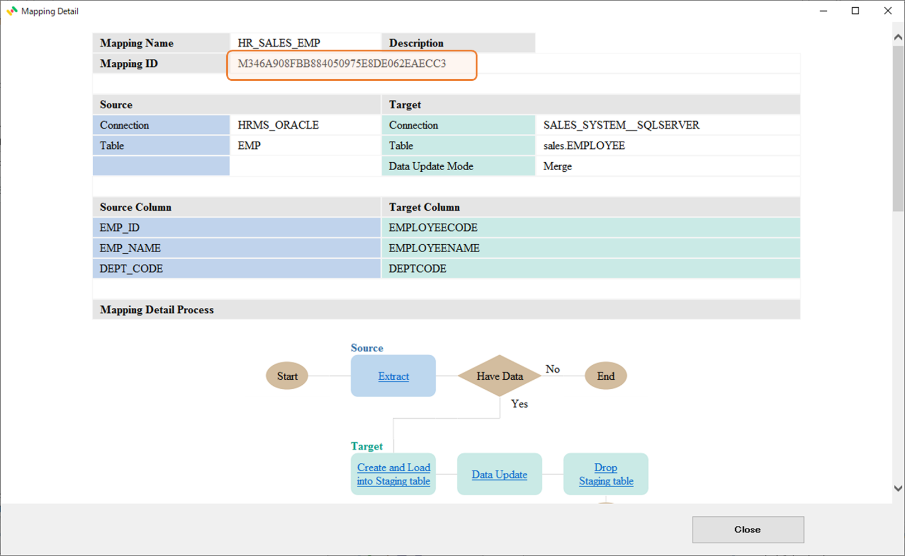

SDI command-line interface (CLI)
Overview
Use SdiCli.exe to execute saved mappings, inspect configuration, validate and generate integration plans, apply settings, and review execution history. Specify an operation through commands and options. You can also execute a mapping by supplying only its name or ID.
The default installation folder is C:\Program Files\RiCCT\SimpleDataIntegrator. Run the examples from that folder or specify the full executable path.
Before you start
Initialize SDI and register any required customer management keys in Studio first. CLI does not initialize settings or change management keys.
Execute a saved mapping
Specify a command and options
SdiCli.exe mapping list --format json
SdiCli.exe mapping show --id M001 --format json
SdiCli.exe mapping exe --id M001 --request-id RUN-001 --format json
SdiCli.exe mapping exe --name "EMP_TO_EMPLOYEE" --request-id RUN-002 --format json
Replace sample IDs such as M001 with actual IDs. Specify exactly one of --id or --name. Names match exactly; ambiguous names require selection by ID before execution.
Reusing a --request-id returns the previous result instead of executing twice. Use a new ID for a different operation or an intentional rerun. If interruption leaves a result unknown, CLI does not retry automatically. Inspect execution logs before deciding what to do next. CLI cancellation through --timeout-seconds is not supported.
Manual mapping exe executes a mapping configured and saved in Studio, including mappings that use API input mapping or column value settings and transformations.
Specify only a mapping name or ID
SdiCli.exe "EMP_TO_EMPLOYEE"
SdiCli.exe "MBE5B7F93B8E84B70B4D3AFDF229E1A35"
This format takes a single mapping name or ID. Additional options cannot be specified.
| Exit code when supplying only a name or ID | Meaning |
|---|---|
| 0 | Success |
| 1 | Execution failed |
| 2 | Mapping not found |
Command discovery and JSON results
SdiCli.exe system help --format json
SdiCli.exe system capabilities --format json
SdiCli.exe system inspect --format json
Use system help for commands, required arguments, and common options; system capabilities for supported features; and system inspect for the environment and license state. --format json selects an output format and does not enable AI mode.
| JSON field | Meaning |
|---|---|
schemaVersion / cliVersion |
Result schema and CLI versions |
action / caller |
Operation and caller mode, manual or ai |
status |
ok, needs_input, or error |
data |
Operation result |
issues / nextActions |
Errors, warnings, and required next steps |
operationId |
Execution identifier matching Studio logs. Omitted for operations without execution or errors before execution. |
For the command-and-options format, exit code 0 means success. On a nonzero exit, inspect status and issues as well. For example, 3 requires revised input, 7 indicates integration failure, 8 an unknown execution result, and 9 an unsupported feature.
Connections, metadata, and column suggestions
SdiCli.exe connection list --format json
SdiCli.exe connection show --id C001 --format json
SdiCli.exe connection test --id C001 --format json
SdiCli.exe metadata tables --connection-id C001 --schema public --format json
SdiCli.exe metadata columns --connection-id C001 --schema public --table emp --format json
SdiCli.exe schema get --name mapping-draft --format json
SdiCli.exe mapping suggest-columns --file mapping-draft.json --format json
Suggestions are not saved to operational settings automatically. Embedded MappingSpec metadata is matched offline; a side without metadata is inspected through its registered Connection. In a standalone MappingSpec, connectionRef is a registered Connection ID.
Create, validate, and apply a plan
SdiCli.exe schema get --name integration-plan --format json
SdiCli.exe plan template --type table-merge --output plan.json --format json
SdiCli.exe plan validate --file plan.json --level static --format json
SdiCli.exe plan generate --file plan.json --mode draft --output-dir .\draft --format json
Edit the template for the real connections, tables, and column mappings. Static validation and draft generation do not connect to a database. A draft has not been checked against live metadata and cannot be applied directly.
Set passwords in an interactive terminal rather than writing plaintext into a plan. Do not combine this command with JSON output or redirection.
SdiCli.exe connection set-secret --plan-file plan.json --connection-ref source-db
Secrets use local references protected by the current user’s DPAPI. Configure them again when moving to another user or computer.
SdiCli.exe plan validate --file plan.json --level connected --format json
SdiCli.exe plan diff --file plan.json --level connected --format json
SdiCli.exe plan generate --file plan.json --mode deployable --output-dir .\generated --format json
SdiCli.exe plan apply --manifest .\generated\manifest.json --format json
Connected validation checks live database structures. Deployable generation creates settings and a manifest that can be applied. Keep generated files separate from the operational configuration folder. The apply command updates Connection, Mapping, and Scheduler settings and rechecks metadata, existing-setting hashes, and agreement between the plan and generated artifacts.
Saving is atomic per file and records a journal. If applying fails partway through, use the apply ID in the result to inspect and recover:
SdiCli.exe plan recover --apply-id APPLY001 --action inspect --format json
SdiCli.exe plan recover --apply-id APPLY001 --action rollback --format json
Keep Studio and Worker stopped until required recovery is complete. Rollback restores configuration files, not database data changed by an integration run.
Schedules and execution history
SdiCli.exe schedule list --format json
SdiCli.exe schedule show --id S001 --format json
SdiCli.exe schedule preview --file plan.json --count 5 --format json
SdiCli.exe worker status --format json
SdiCli.exe execution list --mapping-id M001 --format json
SdiCli.exe execution show --id OPERATION_ID --format json
SdiCli.exe report generate --manifest .\generated\manifest.json --output-dir .\report --format json
Replace OPERATION_ID with the result’s operationId. Newly generated schedules are disabled. Preview times use the Worker’s local time and do not prove that a schedule ran or succeeded. Enabling an existing schedule requires its current configuration hash:
SdiCli.exe schedule set-enabled --id S001 --enabled true --expected-hash CURRENT_HASH --format json
Reports summarize information available when generated. They do not compare every data value or infer unavailable row counts.
Calling CLI from AI
AI callers must add the value-less --ai flag:
SdiCli.exe mapping exe --id M001 --ai --request-id AI-RUN-001 --format json
AI-mode configuration changes and direct execution support a single-Worker configuration and require Studio closed and Worker stopped. CLI does not terminate them. While testing schedules through Worker, use CLI only to inspect status and history. CLI changes and executions use mutual exclusion in both manual and AI modes.
system inspect exposes the edition, valid, status, and aiUsePermitted under data.license. License terms permit AI use with a valid Developer or Enterprise license. An unavailable license is not treated as Developer. CLI does not itself block commands by edition, so also verify the applicable license terms.
Scope of configuration generation and AI operations
| Area | Supported scope |
|---|---|
| Connections and metadata | Local Oracle 12c+ and PostgreSQL 12+. New Connections use Basic authentication. |
| Mapping generation | Table extraction; full, filtered, or timestamp-incremental data; Append, Merge, and delete plus Append. |
| Scheduler generation | Hourly, Daily, Weekly, Monthly, Repeat. |
| Outside scope | Generating arbitrary transformation expressions or API input mappings; CustomSQL; configuration generation or AI operations for other databases; cluster changes; starting/stopping Worker; generic dry-run; execution cancellation. |
This table covers CLI configuration generation and operations with --ai. To run a saved mapping manually, see Execute a saved mapping.
Find a Mapping ID
Choose the detail icon in the home form’s mapping list, then read Mapping ID in the detail form. You can also find IDs through mapping list.


Initialization and management keys
Stop CLI executions and wait for completion before creating or changing management keys. If settings are missing or a key cannot be read, follow System Settings recovery.